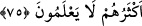

Ki O’nun misli tasavvur edilsin.
el-İrşâd’da der ki: Hal ve durumlardan herhangi birini, Allah’ın durumuna
benzetmeyin, demektir.
“Çünkü Allah” yaptıklarınızın iç yüzünü ve büyüklüğünü “bilir,” ona göre de sizi
cezâlandırır “siz ise bilemezsiniz.” Eğer bilseydiniz ona cüret etmezdiniz. Yanlışı ve
doğruyu ancak Allah bilir. Dünyâ ve hevaya tapmak, mahlûka yönelmek ve onları
Allah’ın benzerleri yerine koymak da insanın hatalarındandır. Halbuki varlık âleminde
Allah Teâlâ’dan başka müessir yoktur. Maksûd O’dur, O’na ulaşmak yine O’nun
lütfudur.
Hz. Peygamber (s.a.)’den rivâyet edilmiştir: “Allah gözlerden perdelendiği gibi
basîretlerden de perdelenmiştir. Sizin O’nu taleb ettiğiniz gibi mele-i a’lâdakiler
(yüce topluluktaki melekler) de O’nu taleb ederler.” [175] Çünkü zaman ve mekan her
ne kadar O’nun nûruyla dolu olsa da Allah için zaman ve mekan söz konusu değildir.
Gök ve yer ehli onu talebde eşittir.
Mûsa (a.s.) Allah Teâlâ’ya: “Ya Rabbi! Seni nerede bulurum?” dedi. Allah Teâlâ
şöyle buyurdu: “Ey Mûsâ! Bana yöneldiğinde bana ulaşmış olursun.” Yâni Allah Teâlâ,
kendisine yönelen kişinin zaman ve mekan söz konusu olmadan kendisine vâsıl
olacağına işâret etmiştir. Esas mesele toplu bir iç duygusu (el-cem‘u’l-vicdânî) ile
yönelmek ve Hakk’a tam olarak meyletmektir. Çünkü arayan ve ciddi olan bulur. Kapıyı
ısrarla çalana kapı açılır. Kapı kalb kapısıdır. Kişi ma‘rifetullah evine bu kapıdan girer,
sonra rabbânî müşâhedeye vâsıl olur. Böylece üns, huzûr, zevk ve safa hasıl olur.
Heybet, hayret, vahşet (yalnızlık), gaflet, keder ve kapalılık ortadan kalkar. Ya Rabbi!
Bizi de vuslata eren kullarından eyle.
75. Allah, hiçbir şeye gücü yetmeyen, başkasının malı olmuş bir köle ile
katımızdan kendisine verdiğimiz güzel rızıktan gizli ve açık olarak harcayan (hür)
bir kimseyi misal verir. Bunlar hiç eşit olurlar mı? Doğrusu hamd Allah’a mahsustur.
Fakat onların çoğu (bunu) bilmezler.
“Allah, hiçbir şeye gücü yetmeyen,” kendileri için tasarruf hakkı olan mükâteb ve
me’zûn köleleri ayırmak için onu “gücü olmamak”la vasfetti. “başkasının malı olmuş
bir köle ile katımızdan kendisine” mülkiyet yoluyla, büyük ve yüce olan kendi